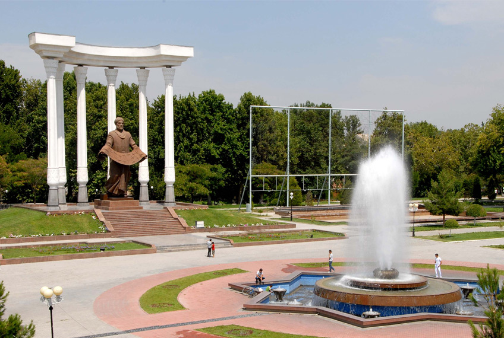

Farg`ona Viloyati
Fargʻona (1907-yilgacha — Yangi Margʻilon; 1907—1924-yillarda Skobelev, mahalliy talaffuzda — Iskobil deb atalgan. Podsho Rossiyasining Oʻrta Osiyoni bosib olishda va keyingi yillarda koʻplab qirgʻinbarotlar uyushtirgan generali M.D. Skobelev nomiga qoʻyilgan) — Fargʻona viloyatining maʼmuriy, iktisodiy va madaniy markazi, respublikaning yirik shaharlaridan biri. Maydoni 0,09 ming km². Aholisi 222,4 ming kishi (2004, Fargʻona vodiysidagi shaharlar ichida aholi soni boʻyicha 3-oʻrinda). Shahar Fargʻona vodiysining jan. qismida, Olay togʻlarining etagida, 580 m balandlikda joylashgan. Iklimi kontinental. Oʻrtacha yillik temperatura 13°. Yanvarning oʻrtacha tempaturasi —2,7°, iyulniki 26,4°. Eng past temperatura 27°, eng yuqori temperatura 42°. Yiliga 192 mm yogʻin tushadi. Yogʻinning koʻp qismi qish va bahor fasllarida yogʻadi. Gʻarbdan baʼzan qattiq shamol va garmsel, Olay togʻi (Shohimardonsoy vodiysi)dan togʻvodiy shamoli esadi.Fargʻona soʻzining kelib chiqishi toʻgʻrisida turli fikrlar mavjud. Olimlar "Fargʻona" soʻzining bundan 13 asr ilgari sugʻd yozuvlarida "Pargʻana", "Pragʻana" shakllarida yozilganligini hamda hind-sanskrit tilida "kichik viloyat"; fors tillarida "togʻ oraligʻidagi vodiy", "atrofi berk soylik" degan maʼnolarga ega boʻlganligini taʼkidlaydilar. Farg'ona o'zining go'zal landshaftlari bilan mashhur bo'lgan olis shahar. "Chimyon" kurorti Olay tog 'etaklaridagi shifobaxsh mineral buloqlarning muvozanati bilan mashhur bo'lgan Chimen qishlog'iga asoslangan. Eng katta kurort Markaziy Osiyoda joylashgan.[https://samarkandtours.com/uz/uzbekistan/fergana/%7Cfargana[sayt ishlamaydi] ][sayt ishlamaydi]
1876-yil Rossiya imperiyasi Qoʻqon xonligini yoʻqotib uning hududida Fargʻona viloyatini tuzgach, maʼmuriy markaz qurish uchun Margʻilondan 10 km janubida joylashgan Yormozor va sobiq Sim, Chiringan qishloqlari oʻrnini tanladi. Shahar qurilishi loyiha boʻyicha 1877-yil iyunda boshlandi. Qurilish harajatlari, asosan, mehnatkashlar zimmasiga yuklandi (soliq solindi). Bu shaharni katta maydonni qurshab olgan qalʼa ichida qurish koʻzda tutildi. Qalʼadan shim.gʻarb va gʻarbga tomon radius shaklida uchta uzun koʻcha qurildi. Ulardan biri eski Margʻilon tomonga yoʻnaldi. Bu koʻchalar parallel tor koʻchalar bilan tutashtirildi. General-gubernator shaharni Yangi Margʻilon deb atashni buyurdi. Shaharning qurilishi 1904-yilda yakunlandi. Yangi Margʻilon, asosan, Margʻilonsoyning chap sohilida joylashdi. Oʻng sohili bozor uchun moʻljallandi. Shaharning jan. qismida kazarmalar qurildi, gʻarbiy qismida harbiy boshqarma joylashtirildi. 1880-yilda bu boshqarma yozgi harbiy lagerga oʻzgartirildi.
Shahar koʻchalarining har ikki tomoniga daraxt ekildi. Shaharda sanoat korxonalari qurilmadi. 1898-yil Samarqand—Andijon temir yoʻl oʻtkazilishiga qaramasdan, shaharning kengayishi va rivojlanishi sekinlik bilan bordi. 1891-yilda shaharda 2 ta pivo pishirish va bitta koʻnchilik zavpdi faoliyat koʻrsatdi. Mahalliy yarim kustar korxonalar mahalliy xom ashyoni qayta ishlash bilan shugʻullanardi. Paxta tozalash zavpdi faqatgina temir yoʻl oʻtkazilgandan keyin qurildi. 1899-yilda Yangi Margʻilon shahri aholisi atigi 4 ming kishini tashkil etdi.
1907-yilda mustamlakachi maʼmurlar shahar nomini oʻzgartirib, Skobelev deb atadilar. Oʻsha yili temir yoʻl vokzalini ham qurish boshlandi.
1914-yilda yana 4 ta paxta tozalash zavodi va 8 ta pilla quritish moslamasi foydalanishga topshirildi. Shaharchada, asosan, podsho maʼmuriyati va amaldorlari, harbiylar, savdogar va mahalliy boylar yashardi. 1913-yilda shahar aholisi 14 ming kishiga yetdi. Shundan oʻzbeklar atigi 3216 kishini tashkil etdi.
Shahar tunda 80 ta yoritqich (fonus) bilan yoritilardi. Doʻkonlar aholiga xizmat koʻrsatgan. 1917-yilgacha shahardagi 3 ta gimnaziyada 600 oʻquvchi, 5 ta maktabda esa 821 oʻquvchi oʻqidi. Ularga 20 oʻqituvchi saboq berdi. Shaharda birgina kasalxona (35 oʻrin) va bir dorixona mavjud edi.
1917-yil 6—7-dekabrda Skobelevda hokimiyatni shoʻrolar egalladi. 1921-yil da Oʻrta Osiyo ipakchilik sanoatining dastlabki korxonasi — pillakashlik fabrikaasi foydala nishga topshirildi. 1917-yilgacha shaharda, quvvati 700 kVt boʻlgan xususiy (Lipinskiyga qarashli) elektr styasi boʻlgan. Oʻsha yildan keyin Fargʻona vodiysida yagona boʻlgan issiqlik elektr markazi ishga tushirildi. Quvasoy issiqlik elektr styasi faoliyat koʻrsata boshlagandan keyin ular yagona energiya sistemasiga birlashtirildi. Shundan keyin toʻqimachilik fabrikaasi, yogʻ zavodi ishlay boshladi. Paxta tozalash zavodlari, tegirmonlar, kustar korxonalar qayta qurilib kengaytirildi va elektr energiya quvvati bilan ishlay boshladi. Ikkinchi jahon urushidan keyingi yillarda ishga tushirilgan Xoʻjaobod—Fargʻona, Shim. Soʻx—Fargʻona—Quvasoy gaz quvurlari Fargʻonani Buxoro yaqinidan boshlangan yagona gaz quvuri sistemasi bilan bogʻladi.
Undan keyin gidroliz zavodi, 1958-yilda neftni qayta ishlash zavodi ishga tushirildi. 1960- yillarda Fargʻonada temirbeton buyumlari, shifer-gʻisht zavodlari, 2 issiqlik elektr markazi qurildi.

Bosh sahifaga qaytish